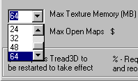
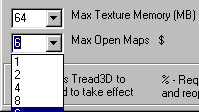
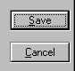

There is one more task to complete before you can start mapping.
Some basic parameters should be checked and modified if so desired.
Click on the "Options" menu and scroll down to "Tread Setup".
A new window will appear which will allow you to modify some basic parameters.

Texture Gamma With this you can adjust the brightness of the textures in the 3D view.
Back Plane Clipping Distance This will adjust the visible distance in the 3D view.
Curve Sub Division This will adjust "smoothness" of curves in the 3D view.
Now click on the "Max Texture Memory" arrow and a drop-down menu will appear.
Just adjust the memory allocation you desire.

Now click on the "Max Open Maps" arrow and a new drop-down menu will appear.
Just adjust the number of open maps you desire.

Finally, now click "Save".
